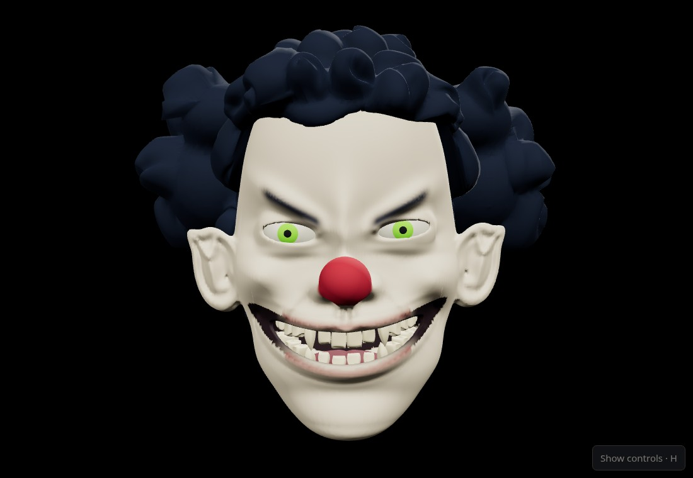
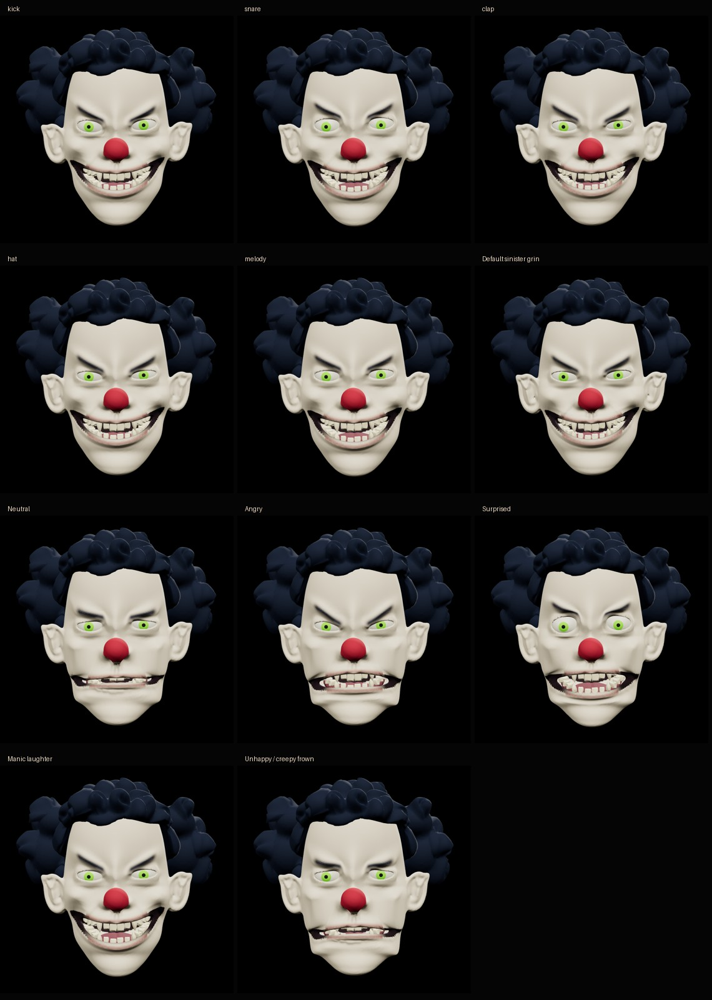

Open the live show · Open inside FREAKSHOW · Unchanged approved rig viewer
The original 0924235 sculpt and six-expression rig are reused without geometry changes. Distinct attack/release gestures are layered within its bounded controls. Audio sample analysis runs in the audio worklet, independently of rendering. The failed local mouth prototypes are excluded.

Kick, snare, clap, subtle hat, melody, then the six existing presets. These are rendered 3D screenshots using identical camera and lighting; the live character remains an actual 3D mesh.

Chromium observations · WebKit observations · Offline observations
These are cloud browser-engine tests, not physical Windows/macOS audio-interface tests. Instrument labels are onset estimates, not audio source separation. Existing Neutral/Frown/Surprised limitations are unchanged from the approved baseline. Tests establish bounded behavior, not perfect recognition of every song.